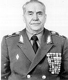

 |
Махмут Ахметович Гареев - генерал армии, президент Академии
военных наук,
доктор военных наук,доктор исторических наук,профессор.
23 июля 2003 Президент ВладимирПутин поздравил генерала
армии, президента Академии военных наук, членаРоссийского
организационного комитета «Победа» Махмута Гареева с
80-летием.
|
Родился 23 июля 1923 г. в г. Челябинске.
Во время Великой отечественной войны окончилТашкентское пехотное
училище. Затем, в послевоенное время, окончил Военную академию
им.Фрунзе с отличием и золотой медалью, Военную академию
Генерального штаба с отличием и золотой медалью.
Женат, сын - офицер, дочь - научный работник.
Домашний адрес:
Домашний телефон:
Хобби, увлечения, вкусы, стиль, имидж: Мастерспорта по легкой
атлетике. Обладает хорошимголосом, в часы досуга любит петь русские
итатарские народные песни.
Награды: Награжден Орденом Ленина за успешнуюслужбу в
Афганистане.
Почетные звания, должности: Доктор военных наук,доктор исторических
наук, профессор, членАкадемии естественных наук, президент
Академиивоенных наук.
Публикации: Крупный военный теоретик. Авторкниг "Тактические
учения иманевры","М.В.Фрунзе - военный
теоретик","Общевойсковые учения"
"Неоднозначныестраницы войны", "Моя последняя
война" иболее 200 научных работ, изданных в СССР и зарубежом..
Основная деятельность: Военныйинспектор-советник группы
генеральныхинспекторов Министерства обороны России.
Место:
Адрес:
Телефон:
Другие занимаемые, в том числе выборные,должности:
Советники, помощники:
Жизненный путь: В 1941 г. добровольцем вступил вармию. Воевал на
Западном, 3-м Белорусском и 1-мДальневосточном фронтах. В 1942 г. в
боях под Ржевомбыл ранен, в 1944 г. снова был ранен в голову.
Войнузакончил старшим офицером оперативного отделаштаба армии на
Дальнем Востоке.
Командовал полком, мотострелковой и танковойдивизиями, был
начальником штаба в общевойсковойармии в Белорусском военном
округе.
В 1971-1974 гг. был начальником штаба Главноговоенного советника в
египетской армии.
После Египта - начальник штаба Уральского военного округа.
С 1974 г. - в Генеральном штабе: начальникВоенно-научного
управления, заместительначальника Главного оперативного
управления,заместитель начальника Генерального штаба.
С 1989 г. - Главный военный советник в Афганистане.
Прослужил в Советской Армии более 50 лет.
Политические взгляды, позиция:
Сторонние оценки, характеристики:
Связи (включая зарубежные): Будучи Главнымвоенным советником в
Афганистане, фактичеки командовал войсками Президента Наджибулы.
Несмотря на предсказания падения Кабульскогорежима в течение
нескольких месяцев, удерживал положение в течение двух лет.
Моджахеды охотились за ним, он был тяжело ранен.
За успешное выполнение задания награжденорденом Ленина и произведен
в генералы армии.
Создано и поддерживается Борисом Майоровым.
Ваши комментарии будут с интересом встречены по адресу
b-i@list.ru.
© 1996, 1997, Мир Бориса Майорова
|